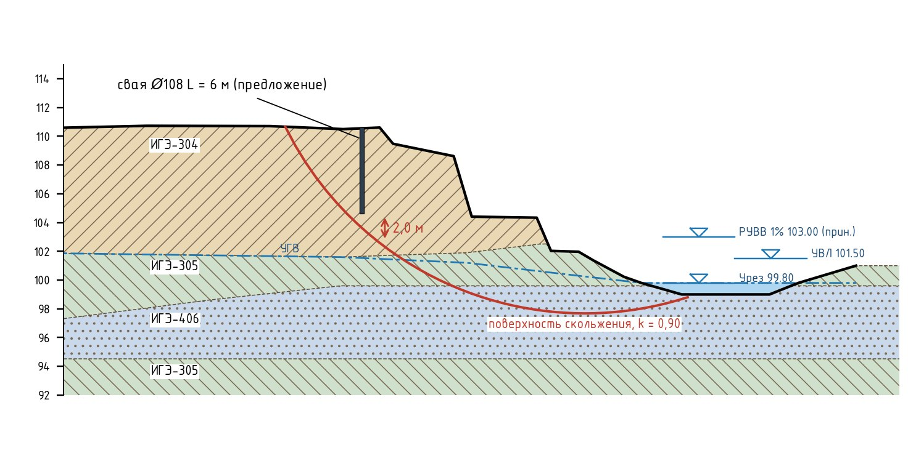
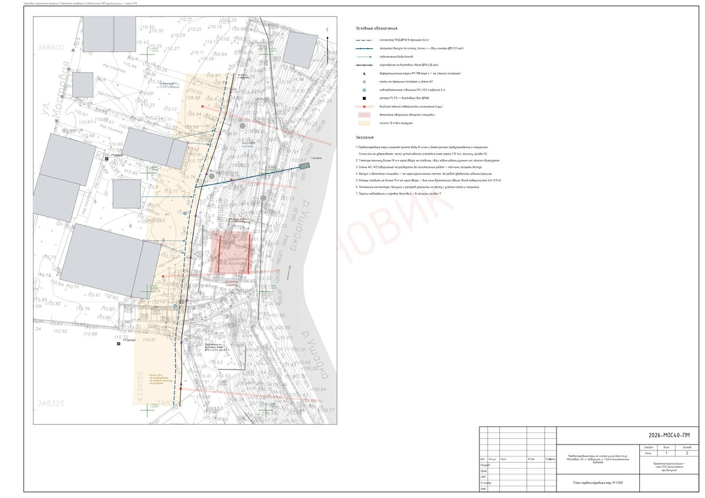

Параллельный проект к концепции берегоукрепления · шифр 2026-МОС40-ПМ · октябрь 2026
Купить винтовые сваи Ø108 мм длиной 6 м и установить около 20 штук для сохранения склона; завинчивать сваекрутом. Ориентировочно 0,21–0,27 млн ₽ без учёта инструмента.
Расчёт той же моделью, что и в основном проекте, по разрезам А-А, Б-Б, В-В.

| Разрез | Глубина скольжения | k сейчас | 20 свай L=6 м | если бы L=12 м | Нужно, кН/м |
|---|---|---|---|---|---|
| А-А | 8,0 м | 0,932 | 0,932 | 0,938 | 265 |
| Б-Б | 8,3 м | 1,010 | 1,010 | 1,016 | 193 |
| В-В | 9,1 м | 1,004 | 1,004 | 1,010 | 187 |
Свая Ø108 со стенкой 4 мм — тонкая труба: предельный изгибающий момент ≈ 8–10 кН·м, через поверхность скольжения она передаёт около 10–15 кН. Для нормы потребовалось бы 13–26 таких свай на каждый метр края двора. Такие усилия воспринимают только массивные конструкции — грунтоцементные рёбра Ø1,0 м или буронабивные сваи (основной проект).
Главная причина весенних подвижек — вода. Поэтому первые деньги — на отвод воды, разгрузку края двора и наблюдения. Винтовые сваи здесь тоже работают, но по своему назначению: ограждение, крепление водоотводной трубы и реперы.

Отвод воды не даёт запасу опускаться весной до 0,83–0,97: ориентировочно он остаётся на уровне 0,90–1,01. Норма 1,15 не достигается — склон остаётся аварийным, но риск весенней активизации ниже, а наблюдения предупредят об ускорении смещений заранее.
| Что | Порог — действие |
|---|---|
| Марки (раз в месяц; весной и после ливней — раз в неделю) | ≥ 5 мм за месяц или ≥ 10 мм от начала — инженеру, полосу закрыть; ≥ 20 мм за месяц — вывести людей из ближайших построек |
| Маяки на трещинах | маяк лопнул или трещина ≥ 2 мм — инженеру |
| Уровень воды в скважинах | выше 2 м от поверхности — проверить коллектор и сети |
| Осмотр после ливней и оттепели | трещины в грунте, «пьяный» лес, вода на склоне — инженеру |
Пороги ориентировочные; после первых месяцев наблюдений их уточняет инженер.
| Работа | Объём | Подрядчик, ₽ | Сами, ₽ |
|---|---|---|---|
| Коллектор ПНД Ø110 SN8 в траншее 0,6 м вдоль края двора (песчаное основание, засыпка, уклон к выпуску ≥ 0,01) | 71 м | 85 200–134 900 | 31 950–49 700 |
| Дождеприёмники и ревизии на коллекторе | 8 шт. | 24 000–40 000 | 16 000–28 000 |
| Подключение водостоков построек к коллектору | 5 здание | 20 000–40 000 | 10 000–20 000 |
| Закрытый выпуск Ø110 по склону до реки, крепление хомутами к винтовым сваям Ø57 L = 1,5 м через 2,5–3 м | 25 м | 50 000–87 500 | 22 500–35 000 |
| Гаситель на выходе выпуска (габион 2×1×0,5 м с камнем) | 1 шт. | 12 000–20 000 | 7 000–11 000 |
| Планировка полосы вдоль края двора с уклоном от склона 2–3 % | 350 м² | 52 500–105 000 | 10 500–28 000 |
| Демонтаж аварийной обзорной площадки (металл ≈ 8 т) с вывозом | 1 компл. | 150 000–350 000 | 150 000–350 000 |
| Ограждение по краю двора на винтовых сваях Ø76 L = 2,5 м (шаг 2,5 м, 30 шт.), панели 3D-сетки h = 1,5 м, калитка у лестницы | 71 м | 184 600–255 600 | 127 800–177 500 |
| Знаки «Опасно: оползень. Проход запрещён» | 5 шт. | 2 000–3 500 | 2 000–3 500 |
| Реперы — винтовые сваи Ø108 L = 3–6 м вне зоны оползня, ствол заполнить бетоном, оголовок с маркой, защитный короб | 2 шт. | 20 000–32 000 | 12 000–24 000 |
| Деформационные марки на ограждении и стенах (12) и маяки на трещины (10) | 22 шт. | 11 000–19 800 | 4 400–8 800 |
| Наблюдательные скважины 5 м (ручное бурение, труба ПВХ Ø50 с фильтром) | 2 шт. | 30 000–60 000 | 8 000–16 000 |
| Проверка сетей на протечки: водопровод, канализация, септик | 1 компл. | 10 000–30 000 | 3 000–8 000 |
| Геодезические наблюдения: нулевой цикл и 4 цикла за первый год | 5 цикл | 40 000–75 000 | 0–15 000 |
Включены непредвиденные 10 %. Цены — по открытым данным 2025–2026 гг., без НДС; перед работами — 2–3 коммерческих предложения.